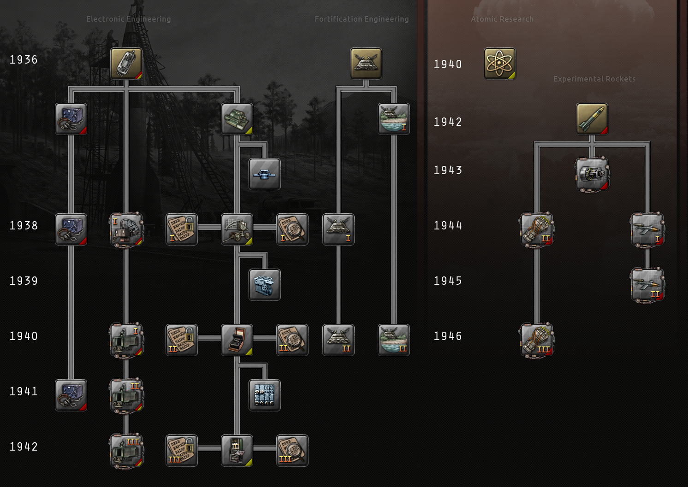

Engineering科技
原页面：Engineering technology
Engineering科技解锁与计算、无线电、雷达、筑垒工事、核武器、火箭与火箭发动机相关的科技。像工业科技一样，工程科技往往在国家层面提供通用加成，但与工业科技不同，这些加成往往与科研速度或单位属性相关，而非经济利益（至少不是直接的经济利益）。如果不启用《抵抗运动》，它还包括影响加密与解密的相关科技。
这些科技与特殊项目高度交织，其中许多要么需要、要么会解锁某些项目。一些工程科技也与特定的特殊项目类别绑定，在研究时会为其提供突破进展，并从任何在该领域从事被动研究的科学家中获益。值得注意的是，图标右下角带红色绶带的科技与空气动力学和航空电子学项目绑定，图标右下角带黄色绶带的科技与核研究项目绑定，而同时带红黄两色绶带的科技（例如雷达科技）则与这两个特殊项目类别都绑定。

工程科研树
电子工程
这棵树提升科研速度、雷达科技与无线电科技并解锁。电子工程有时也被称为电子学。
| 科技 | 年份 | 基础时间 | 前置条件 | 效果 |
|---|---|---|---|---|

电子机械工程 我们身处的时代，电气机器不再只能为我们供暖和照明，还能帮助我们思考和通信。在下个世纪，电子学将成为军事情报的关键。 |
1936 | 110 days | – |
集中测距舰船模块
|
无线电技术
| 科技 | 年份 | 基础时间 | 前置条件 | 效果 |
|---|---|---|---|---|

无线电 采纳业余无线电爱好者的发明并推广调频无线电的使用，将减少无线电干扰，并让我们为无线电技术找到新的用途。 |
1936 | 220 days |
| |
|
改进型无线电 信号强度的改进使无线电能够比以往传播得更远。 |
1938 | 220 days |
| |
|
先进无线电 无线电技术的进步提升了电台的通信距离，甚至使其中一些小巧到可以随身携带。有人称之为步话机。 |
1941 | 220 days |
|
雷达技术
| 科技 | 年份 | 基础时间 | 前置条件 | 效果 |
|---|---|---|---|---|

腔体磁控管 利用一种名为空腔磁控管的产生微波的电子管，我们可以大幅提升现有雷达系统通过反射波探测目标的能力。 |
1938 | 137 days |
| |
厘米波雷达 在微波波段工作的新型雷达，使我们能够探测到以往雷达无法捕捉的过小目标。 |
1940 | 137 days |
| |
相控阵 与依赖机械旋转的传统雷达不同，相控阵利用电子方式操纵波束，使其能够同时执行多项功能，例如跟踪多个目标。 |
1941 | 137 days | 厘米波雷达 |
|
单脉冲雷达 借助单脉冲雷达，我们可以通过比较多个天线的信号来确定目标方向，从而改进探测效果。 |
1942 | 137 days | 相控阵 |
|
计算科技
| 科技 | 年份 | 基础时间 | 前置条件 | 效果 |
|---|---|---|---|---|

机械计算 制造能够进行高级差分分析的机器，将彻底改变机器辅助计算所能完成的工作。 |
1936 | 275 days |
| |

计算机器 为现代计算机奠定理论基础，并制造机电式机器开始付诸实践，将是迈入这一充满可能性的领域的第一步。 |
1938 | 275 days |
| |

改进型计算机 如今已能制造可编程的电子数字计算机。尽管仍然昂贵而笨重，这些机器却能进行远超人类能力的情报分析。 |
1940 | 275 days |
| |

先进计算机 着手研制能够存储程序并使用晶体管的计算机，将使我们踏上数字革命之路，届时这类机器几乎可以用于任何领域。 |
1942 | 275 days |
|
火控系统
| 科技 | 年份 | 基础时间 | 前置条件 | 效果 |
|---|---|---|---|---|
基础火控系统 舰炮的全部射击由中央位置统一控制，确保弹着更加密集并提高命中精度。 |
1936 | 110 days |
| |
改进型火控系统 输入目标的航向、航速与距离，机械计算机就能准确预测出下一轮齐射准备就绪时目标所在的位置。 |
1936 | 110 days |
| |
先进火控系统 输入目标的航向、航速与距离，机械计算机就能准确预测出下一轮齐射准备就绪时目标所在的位置。 |
1936 | 110 days |
|
加密方法
| 科技 | 年份 | 基础时间 | 前置条件 | 效果 |
|---|---|---|---|---|
加密 - 多表替换密码 新的通信方式带来了新的被截获风险。转子密码机可用于实现快速而复杂的加密。 |
1938 | 110 days |
加密：+1 | |
加密——循环置换 密码机随机化的不足可以被利用来破解密码。通过改进转子的随机性，我们可以让这类密码分析变得更加困难。 |
1940 | 110 days |
加密：+1 | |
加密——脉冲编码调制 技术的进步与来之不易的经验，使我们能够在通信中实施更多的通信流量保密措施。 |
1942 | 110 days |
加密：+1 |
解密方法
| 科技 | 年份 | 基础时间 | 前置条件 | 效果 |
|---|---|---|---|---|
解密 - 频率分析 密码分析正日益成为一门高深的数学科学。卡片目录之类的系统与密码计数器之类的装置都能为这项必要工作提供帮助。 |
1938 | 165 days |
解密：+1 | |
解密——侧信道攻击 更精密计算机的研制，使差分法等密码分析方法有了新的应用；这些方法若与新的手工破译手段相结合，便可用来破译先进的密码。 |
1940 | 165 days |
解密：+1 | |
解密——自动推演 此前使我们的密码分析得以改进的算力提升，如今也预示着未来将出现几乎无法破解的密码。要想保持领先，我们必须做好准备，更积极地设法获取有关该技术的内幕情报。 |
1942 | 165 days |
解密：+1 |
筑垒工程
| 科技 | 年份 | 基础时间 | 前置条件 | 效果 |
|---|---|---|---|---|

基础筑垒 在结构中使用更坚固的材料与金属加固件，我们就能修建更大的工事而不必担心它们坍塌。 |
1936 | 165 days | – |
|
改进型陆地要塞 更好地利用工事周围的土地，并引入新技术，我们就能加固现有工事并将其进一步扩建。 |
1938 | 165 days |
| |
高级陆地要塞 通过吸取以往的教训，不仅加固工事本身，也加固其地基，我们将能够修建大得多的工事，足以挡住最老练的敌人。 |
1940 | 165 days | 改进型陆地要塞 |
|
改进型海岸要塞 更好地利用沿海工事周围的土地，并引入新技术，我们就能加固现有工事并将其进一步扩建。 |
1936 | 165 days |
| |
高级海岸工事 把我们的掩体与工事更深地修入崖壁和山丘之中，我们就能修建规模更大的综合工事群，甚至有能力击退最强大的海军登陆部队。 |
1940 | 165 days | 改进型海岸要塞 |
|
原子能研究
这棵树包含一项单一研究，它是解锁当前所有核研究特殊项目所必需的。原子研究有时也被称为核技术。
| 科技 | 年份 | 基础时间 | 前置条件 | 效果 |
|---|---|---|---|---|

原子能研究 在核裂变中，分裂原子能释放出巨大的能量与无限的破坏力。 |
1940 | 550 days | – |
|
实验火箭
这棵树与各种涉及火箭与火箭技术的空气动力学及航空电子学特殊项目高度交织。「实验火箭」有时也被称为火箭技术。
| 科技 | 年份 | 基础时间 | 前置条件 | 效果 |
|---|---|---|---|---|

实验火箭 通过提高液体燃料火箭的射程与可靠性来推进火箭科学，将使我们对该技术有足够的了解，从而能够为更先进的型号建造发射场。 |
1942 | 165 days | – |
|

改进制导 通过提高液体燃料火箭的射程与可靠性来推进火箭科学，将使我们对该技术有足够的了解，从而能够为更先进的型号建造发射场。 |
1943 | 110 days |
|
|

双燃烧室火箭发动机 为发动机增加第二个燃烧室，我们就能延长火箭发动机的工作时间并提升其效能。 |
1944 | 165 days |
|
|
先进双室火箭引擎 对双燃烧室发动机的进一步改良，可能使该设计的效能得到更大的提升。 |
1946 | 165 days |
| |

火箭推进炸弹 火箭推进的无制导炸弹能对舰船以及类似的大型装甲目标造成相当大的破坏。 |
1944 | 110 days |
| |
重型火箭推进炸弹 更大的火箭推进无制导炸弹，携带更重的战斗部，能够更有效地穿透目标。 |
1945 | 110 days |
|
秘密科技
这些科技仅在适当条件下对特定国家可用。
| 科技 | 前置条件 | 效果 |
|---|---|---|

解密加成 我们将获得+10 解密速度。 |
可解锁此科技： |
|
特殊项目科技
这些科技只能通过完成特殊项目来获得。
| 科技 | 前置条件 | 效果 |
|---|---|---|
无线电探测 雷达（无线电探测与测距）的研制，使我们能够利用无线电波探测实体目标。考虑到这些发明在定位部队方面可能产生的影响，相关研究高度保密。 |
可解锁此科技：
|
|
核弹 建造原子弹的计划将是一个国家所能承担的最机密、最艰难的任务之一，但一旦成功，可能不仅改变当今战争的走向，也改变世界的未来。 |
可解锁此科技：
|
|
热核炸弹
|
可解锁此科技：
|
|
| isotope_separation_centrifugal | 可解锁此科技：
|
|
参考资料
| 政治 | 意识形态 • 阵营 • 国策 • 理念 • 政府 • 傀儡国 • 流亡政府 • 外交 • 世界紧张度 • 内战 • 占领 • 力量均势 |
| 生产 | 贸易 • 生产 • 建造 • 装备 • 燃料 • 军工组织 • 国际市场 |
| 科研与科技 | 科研 • 步兵科技 • 支援连科技 • 装甲科技（也包括 未拥有绝不后退）• 火炮科技 • 陆军学说 • 特种部队学说 • 海军科技（也包括 未拥有全民持枪）• Naval support科技 • 海军学说 • 空军科技（也包括 未拥有以血盟誓）• 空军学说 • Engineering科技 • Industry科技 • 特殊项目 • 科学家 |
| 军事与战争 | 战争 • 和平会议 • 陆军单位 • 陆战 • 师编制设计 • 坦克设计 • 陆军编制器 • 集团军 • 指挥官 • 作战计划 • 战斗战术 • 舰船 • 舰船设计（伦敦海军条约）• 海战 • 飞机设计 • 空战 • 经验 • 军官团 • 损耗与事故 • 后勤 • 人力 • 核弹 • 突袭 |
| 间谍活动 | 情报 • 情报机构 • 特工 • 任务 • 行动 |
| 地图 | 地图 • 省份 • 地形 • 天气 • 州 |
| 事件与决议 | 事件 • 决议 |